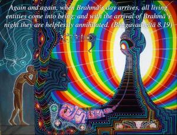
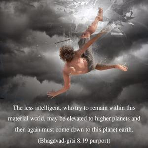
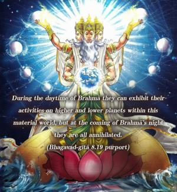
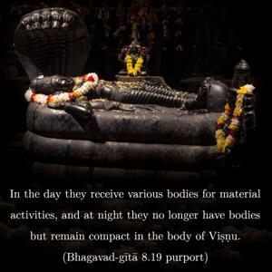
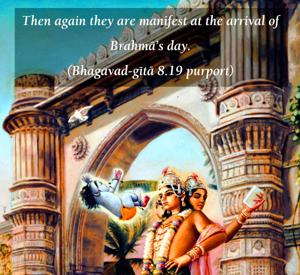
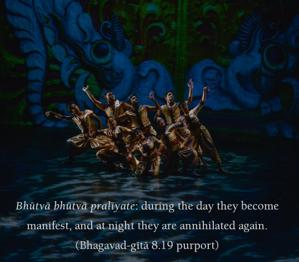
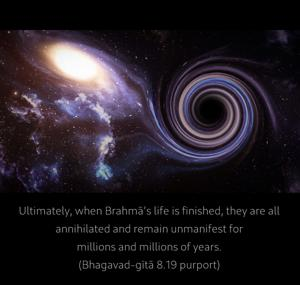

Again and again, when Brahmā’s day arrives, all living entities come into being, and with the arrival of Brahmā’s night they are helplessly annihilated.







The less intelligent, who try to remain within this material world, may be elevated to higher planets and then again must come down to this planet earth. During the daytime of Brahmā they can exhibit their activities on higher and lower planets within this material world, but at the coming of Brahmā’s night they are all annihilated. In the day they receive various bodies for material activities, and at night they no longer have bodies but remain compact in the body of Viṣṇu. Then again they are manifest at the arrival of Brahmā’s day. Bhūtvā bhūtvā pralīyate: during the day they become manifest, and at night they are annihilated again. Ultimately, when Brahmā’s life is finished, they are all annihilated and remain unmanifest for millions and millions of years. And when Brahmā is born again in another millennium they are again manifest. In this way they are captivated by the spell of the material world. But those intelligent persons who take to Kṛṣṇa consciousness use the human life fully in the devotional service of the Lord, chanting Hare Kṛṣṇa, Hare Kṛṣṇa, Kṛṣṇa Kṛṣṇa, Hare Hare/ Hare Rāma, Hare Rāma, Rāma Rāma, Hare Hare. Thus they transfer themselves, even in this life, to the spiritual planet of Kṛṣṇa and become eternally blissful there, not being subject to such rebirths.